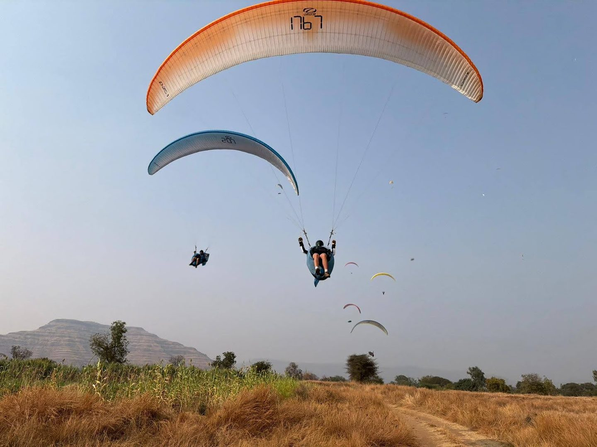
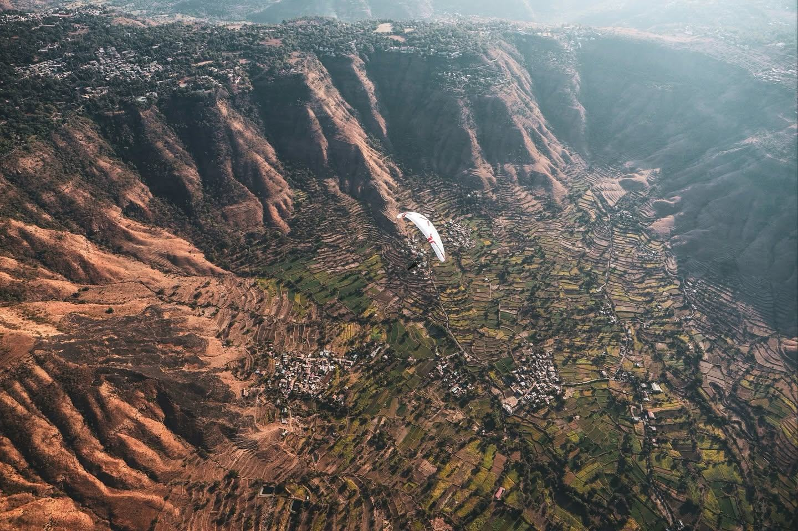
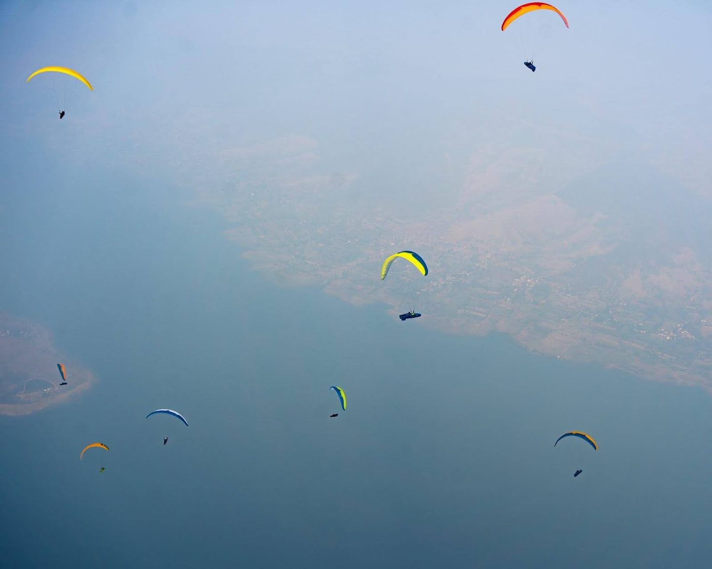
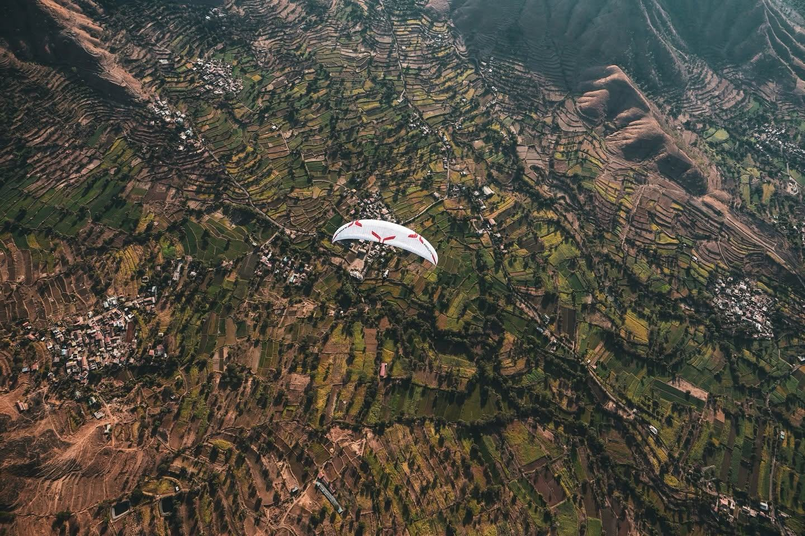

01
Panchgani团
至 2027
起价[to supply]
预留名额
摄影：Michael Gebert / @flywithandy_paragliding
滚动Panchgani位于Sahyadri，这条山脉沿印度西海岸延伸，距海岸约100 km，坐落在Deccan的火山台地上：平顶与陡直的悬崖。Vistasp Kharas 在这里长大，在此飞行已超过十年。他认为这里的技术难度远高于Bir：在Panchgani飞30 km，相当于在Bir Billing飞100 km。
起飞场海拔约1,100至1,200 m，旺季时飞行员能爬升到3,000至4,000 m，所以好天气时的离地高度胜过Bir。
悬崖整个上午都在升温，激发出强劲的热气流。空中有多层逆温，风向每升高一千米就可能改变，每个山谷和山坳都有自己的风。
每天傍晚，海风从海岸吹来，所以飞行日的安排都围绕它展开。在可以越野飞行的那段时间里，这里棒极了。
十一月至三月。风起初来自北东北方向，临近春天转为东南风，因此起飞场会随之选择。本团在二月飞行，正值季节正中。
如果高度低于1800米，就开始寻找安全的降落点。除非你真的清楚自己在做什么，否则不要靠近地形。
Panchgani于2019年举办了第一届世界杯预赛，有近100名飞行员参加；第二届于2024年举办，也是印度滑翔伞协会（Paragliding Association of India）主办的第一届。当地最长的航线向西北延伸约100 km，直到Kamshet。
在Panchgani待八天，在最后一个肯尼亚团结束两天后开始。
至 2027
起价[to supply]
预留名额点击“预留名额”即会为该团期发送咨询。







在Panchgani举办世界杯预赛之前，Vistasp Kharas 介绍了这个场地：它对飞行员有哪些要求，以及在印度参加比赛飞行可以期待什么。
能在强风和强热力条件下起飞的飞行员。在Panchgani飞行超过十年的 Vistasp Kharas 建议先参加SIV课程：这里的热气流可能很猛，还夹杂着风。他不会推荐只习惯阿尔卑斯空气、对风了解不多的飞行员前来，因为在背风面，这个场地毫不留情。
本团的飞行员等级要求为[to supply]。
高B级或C级伞很理想，低B级也表现不错；A级伞会让你有点沮丧。不要带你最好的伞：Harrison's Folly的起飞场是红土，当地飞行员都会备一顶已经染红的伞。
起飞场海拔约1,100至1,200 m，旺季时飞行员能爬升到3,000至4,000 m。当地规矩：低于1,800 m，就开始寻找安全的降落点；除非你确切知道风在怎么吹，否则远离地形。
一旦知道风从哪里来，下午晚些时候在主台地上做山顶降落比较宽容。在山谷里，要降落在靠近公路、已经收割过的田里：绝不要降在未收割的庄稼或甘蔗地里。电线架在地面之上，所以要留意电线杆和它们的影子。村民很友好，坐拼车吉普回镇上也很便宜。
Panchgani距Pune约两小时车程，距Mumbai约四个半到五个小时。火车不通Panchgani：从Mumbai坐火车到Pune，约四小时，然后换乘出租车或巴士。
团费包含的内容为[to supply]。
定金、尾款的支付时间以及取消后的处理，都写在预订条款中。请在预订前阅读，并购买行程取消保险。
准备好Touch The Sky With Glory了吗？
无论你是飞行10小时、正向第一个50小时迈进的飞行员，还是追逐下一项世界纪录的天空老手，我们专注于把你的雄心变成飞行时间。这次轻松、不设任何预期的初步通话，用坦诚的交流帮你理清种种未知。
我们会为你详细讲解：